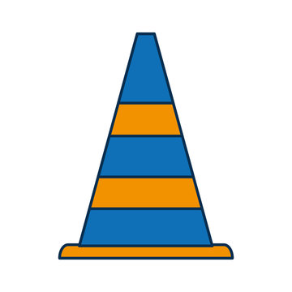

Portfolio




Helping organizations achieve operational excellence through process optimization, change management, and data-driven decision making.
With over 10 years of experience in environments where precision and accountability are paramount, I specialize in enhancing processes that align with organizational goals. As an ASQ Certified Six Sigma Black Belt and Project Management Professional (PMP), I bring a unique blend of analytical thinking and strategic planning to every project.
Currently serving as Manager of AC Way, Change Management & HR Reporting at Algonquin College, I lead initiatives focused on continuous improvement, process optimization, and data-driven decision making. My approach combines Lean Six Sigma methodologies with change management strategies to drive sustainable organizational transformation.
Implementing Lean Six Sigma methodologies to eliminate waste, reduce variation, and optimize end-to-end processes for maximum efficiency and quality.
Comprehensive mapping and analysis of business processes to identify bottlenecks, redundancies, and opportunities for improvement and standardization.
Creating clear, concise, and effective SOPs that ensure consistency, compliance, and quality across all operational activities.
Developing and executing comprehensive change management strategies that facilitate smooth transitions and maximize adoption of new processes and systems.
Streamlining workflows across departments to eliminate silos, improve collaboration, and enhance overall organizational efficiency.
Implementing RPA, AI-powered solutions, and low-code/no-code automation to streamline repetitive tasks and enhance operational efficiency.
Developing comprehensive analytics strategies, dashboards, and KPI frameworks to drive data-informed decision making across the organization.
Optimizing HR processes and leveraging workforce data to improve recruitment, onboarding, engagement, and overall employee experience.
Developing comprehensive transformation roadmaps that align operational strategies with organizational goals to drive sustainable growth.
"Caleb's expertise in Lean Six Sigma and process optimization transformed our operations. His methodical approach to identifying inefficiencies and implementing solutions resulted in a 30% increase in productivity and significant cost savings."

"Working with Caleb on our change management initiative was a game-changer. His strategic approach and ability to engage stakeholders at all levels ensured a smooth transition and high adoption rate for our new systems."
"Caleb's data analytics expertise helped us transform our HR processes. The dashboards and reporting systems he implemented provide invaluable insights that drive our strategic decision-making."

hui.caleb@gmail.com
Ottawa, Ontario, Canada
Monday - Friday: 9am - 5pm